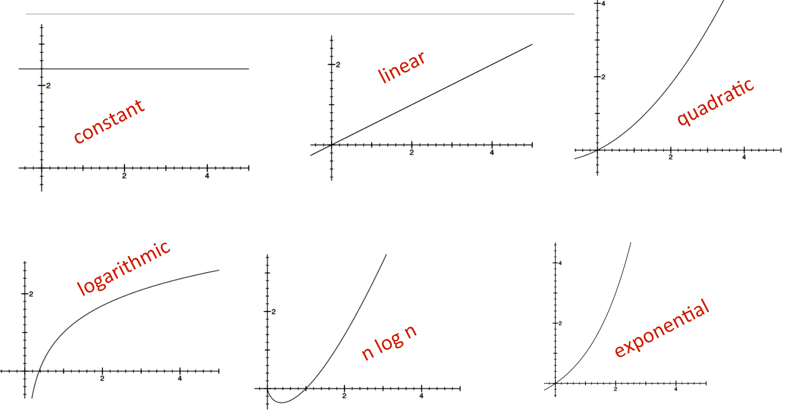
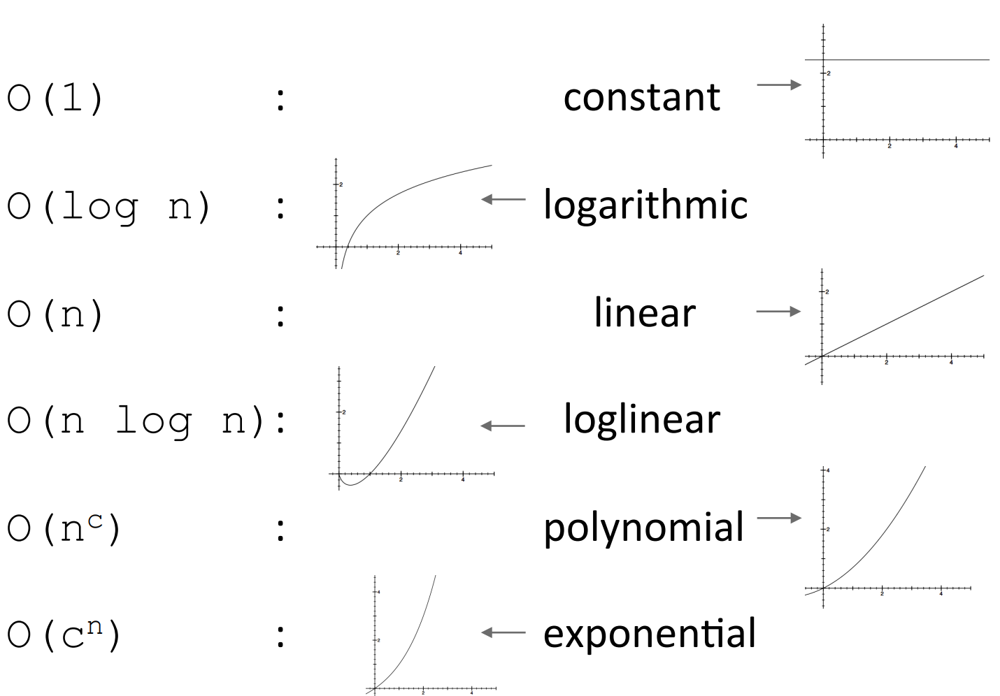
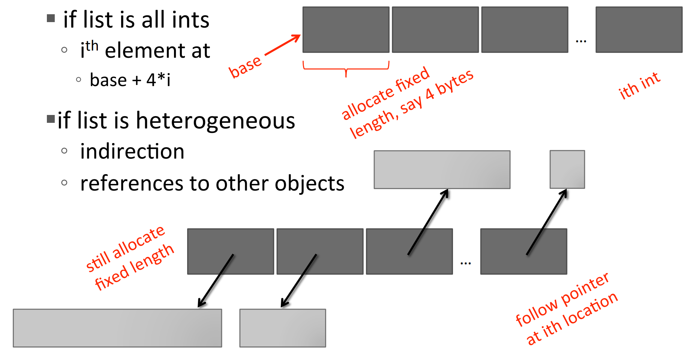

Time vs. Space Efficiency
Want to understand efficiency of programs. But there are challenges in understanding efficiency of solution to a computational problem:
How to evaluate efficiency of programs
Timing a program
import time
clock function to record the current physical time
import time
def c2f(c):
return c*9/5 + 32
t0 = time.clock()
c2f(100000)
t1 = time.clock() - t0
print("call took", t1, "s")
Timing programs is inconsistent
GoodBadBadBadBadCounting operations
import time
def c2f(c):
return c*9/5 + 32 # 4 ops
def mysum(x):
total = 0 # 1 op
for i in range(x+1): # loop x+1 times. 1 op for x+1
total += i # 2 ops
return total # 1 op
#mysum takes 2 + 3(x+1) ops
Counting operations is also inconsistent
GoodBad in some contexts, good in othersGoodBadGood!Still need a better way
Ideas
Need to choose which input to use to evaluate a function
mysum(x).listSum(ls).searchForElement(ls, e).
Different inputs change how the program runs
def searchForElement(ls, e):
for i in ls:
if i == e:
return True
return False
e is first element in the list: BEST CASEe is not in the list: WORST CASEBEST, AVERAGE, WORST cases
L of some length len(L).len(L):
searchForElementlen(L)
len(L)
searchForElementOrders of growth. Goals:
Measuring Order of Growth: Big Oh Notation
Exact steps vs. O():
def fact_iter(n):
""" assumes n an int >= 0 """
answer = 1
while n > 1: # comparison is 1 step
answer *= n #2 steps
n -= 1 #2 steps
return answer
O(n)
What does O(n) measure?
Simplification examples
O(n^2): n^2 + 2n + 2 O(n^2): n^2 + 10000000n + 3^10000 O(n): log(n) + n + 4 O(n log(n)): 0.0001*n*log(n) + 300n O(3^n): 2n^30 + 3^n
Examples of Types of Order of Growth

Analyzing programs and their complexity
for i in range(n): #O(n)
print('a')
for i in range(n*n): #O(n^2)
print('a')
is O(n)+O(n^2) which is O(n+n^2) which is O(n^2) because of dominant term.
Analyzing programs and their complexity
O(f(n))*O(g(n)) is O(f(n)*g(n)).
for i in range(n): #n loops, each O(n), for a total of O(n)*O(n)
for j in range(n):
print(a)
O(n)*O(n) is O(n*n) is O(n^2) because
the outer loop goes n times and the inner loop goes n
times for every outer loop iteration.
Complexity Classes
O(1) denotes constant running timeO(log n) denotes logarithmic running timeO(n) denotes linear running timeO(n log(n)) denotes log-linear running timeO(n^c) denotes polynomial running time (c is a constant)O(c^n) denotes exponential running time (c is a constant raised to a power based on size of input)Complexity classes ordered low to high

Complexity growth
| Class | n=10 | n=100 | n=1000 | n=1000000 |
| O(1) | 1 | 1 | 1 | 1 |
| O(log n) | 1 | 2 | 3 | 6 |
| O(n) | 10 | 100 | 1000 | 1000000 |
| O(n log(n)) | 10 | 200 | 3000 | 6000000 |
| O(n^2) | 100 | 10000 | 1000000 | 1000000000000 |
| O(2^n) | 1024 | 1.2*10^31 | 1.07*10^311 | forget it! |
Linear complexity: Simple iterative loop algorithms are typically linear in complexity.
Linear search on unsorted list
def linearSearch(L, e):
found = False
for i in range(len(L)):
if e == L[i]:
found = True # can speed up a little by returning True here
# but speed up doesn't impact worst case
return found
O(len(L)) for the loop * O(1) to test if e == L[i]. Subtle: assumes we can retrieve element of list in constant time.O(1+4n+1) = O(4n+2) = O(n).O(n) where n is len(L).Constant-time list access 
Linear search on sorted list
def search(L, e):
for i in range(len(L)):
if L[i] == e:
return True
if L[i] > e:
return False
return False
eO(len(L)) for the loop * O(1) to test if e == L[i]. Worst case will need to look at whole list.O(n) where n is len(L)Linear algorithm: add characters of a string, assumed to be composed of decimal digits
def addDigits(s):
val = 0
for c in s:
val += int(c)
return val
This is O(len(s)).
Linear complexity example: complexity often depends on the number of iterations
def fact_iter(n):
prod = 1
for i in range(1, n+1):
prod *= i
return prod
nO(1+3n+1) is O(3n+2) is O(n)O(n)Nested loops
Quadratic complexity: determine if one list is subset of second, i.e., every element of first, appears in second (assume no duplicates)
def isSubset(L1, L2):
for e1 in L1:
matched = False
for e2 in L2:
if e1 == e2:
matched = True
break
if not matched:
return False
return True
len(L1) timeslen(L2) times, with constant number of operations: O(len(L1)*len(L2)).O(len(L1)) times, and the inner loop iterates O(len(L2)/2) times on average (averaged over outer loop iterations). Given that the lists are of equal length, let n=len(L1)=len(L2), then the worst-case running time of this program is O(n^2).Quadratic complexity example: Find intersection of two lists, return a list with each element appearing only once.
def intersect(L1, L2):
tmp = []
for e1 in L1:
for e2 in L2:
if e1 == e2:
tmp.append(e1) #collect all intersections in tmp
break
res = []
for e in tmp:
if not(e in res):
res.append(e) #eliminate duplicates
return res
len(L1)*len(L2) stepslen(tmp) steps, which is at most len(L1).e in res takes at most len(res) steps which can be at most min(len(L1),len(L2)).O(len(L1)^2).